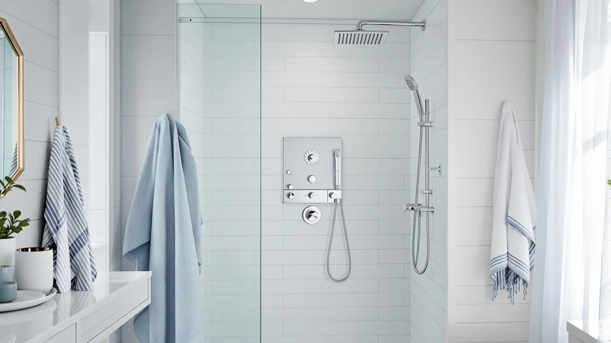

How to Clean Shower Glass: Complete Guide (2026)
Prices and picks verified as of September 2026. Independent, reader-supported reviews.


Things to Know Before You Buy
- Hard water spots on shower glass are mineral deposits, not dirt, and ordinary glass cleaner won't dissolve them; you need an acid like white vinegar to break the calcium bond.
- Frameless glass with a factory water-repellent coating needs a diluted vinegar solution instead of full strength, since repeated acid exposure wears down the coating faster over time.
- A squeegee pass after every shower is the single biggest factor in whether shower glass stays clear between cleanings, more than any deep clean on its own.
- A full deep clean, including a vinegar soak, takes about 30 minutes and costs roughly $10 in supplies most households already have on hand.
- Abrasive pads and powdered cleansers etch glass permanently under bathroom lighting, so a microfiber cloth or soft sponge is the only safe scrubbing tool.
How to clean shower glass comes down to one order of operations: soften the hard water film before you touch it, lift what's left with a mild abrasive, and dry the glass completely so new spots don't get the chance to form. Skip the softening step and scrub straight into dry mineral buildup, and you risk the fine scratches that trap even more soap scum going forward.
Most cloudy shower glass isn't dirt, it's calcium and magnesium from hard water bonding to the surface every time water evaporates and leaves minerals behind. The five steps below use vinegar, baking soda, and a squeegee, the same combination glass manufacturers and professional cleaners recommend, and a full clean takes under 30 minutes even on glass that hasn't been treated in months. We researched manufacturer care guides and cross-checked them against verified owner reviews to confirm which methods actually clear hard water film without dulling the glass.
What You'll Need
- Supplies: white vinegar, baking soda, and dish soap
- Tools: a spray bottle, a squeegee, and microfiber cloths for the shower glass
Step 1: Rinse the Glass and Clear Loose Debris
Start by rinsing the shower glass with warm water to loosen surface-level soap scum, hair, and dust before you apply anything stronger. Cleaning directly over a dry, gritty panel grinds that grit into the surface once you start wiping, which is one of the easiest ways to leave faint scratches on tempered glass.
Wipe the glass down with a damp microfiber cloth in overlapping strokes, paying extra attention to the bottom corners and the track where the door meets the frame. Soap residue collects there first and, if it dries, mixes with the vinegar in the next step to form a thicker paste that takes longer to rinse away.
Check the silicone caulking around the enclosure while you're at it. Cracked or peeling caulk lets water sit behind the glass frame during cleaning, so it's worth flagging even if you're not fixing it today.
Step 2: Spray On a Vinegar Solution and Let It Sit
Fill a spray bottle with undiluted white vinegar and coat the entire shower glass surface, working from the top down so the solution has time to run over the lower sections as it drips. The acid in plain vinegar breaks down calcium and magnesium deposits without scratching tempered glass or the metal hardware around it.
Let the vinegar sit for 10 to 15 minutes. Glass that hasn't been treated in a month or longer, or homes on especially hard water, benefits from the full 15 minutes, and you'll often see the film start to loosen and turn slightly cloudy as the vinegar reacts with the deposits.
For panels with a factory water-repellent coating, cut the vinegar with an equal part of warm water instead of applying it full strength. The diluted mix still lifts most hard water spots but wears down a protective coating more slowly than undiluted vinegar does.
Step 3: Scrub Stubborn Hard Water Spots with Baking Soda
Rinse off the vinegar with warm water, then mix three parts baking soda with one part water into a thick paste for any spots that are still visible. Apply the paste directly to the stubborn areas and let it sit for a few minutes before you start scrubbing.
Work the paste in with a non-abrasive sponge or soft cloth, using small circular motions on the spot itself and overlapping strokes on the rest of the glass. Baking soda is mildly abrasive, enough to lift bonded mineral deposits, but it won't etch shower glass the way steel wool or a powdered cleanser can.
Skip anything labeled as a scouring pad or an abrasive powder, even on the toughest spots. Those leave fine scratches that aren't visible while the glass is dry but show up as a permanent hazy patch every time the shower gets steamy again.
Step 4: Rinse Thoroughly and Squeegee the Glass Dry
Rinse the entire shower glass panel with clean warm water to remove any leftover vinegar or baking soda residue. Cleaning solution left behind attracts new mineral buildup faster than bare glass does, so a thorough rinse matters as much as the scrubbing that came before it.
Starting at the top corner, pull a squeegee down the glass in slightly overlapping strokes, wiping the blade dry on a towel between passes. Working top to bottom keeps drips from re-depositing water on sections you've already cleared.
Finish any edges or corners the squeegee can't reach with a dry microfiber cloth. Standing water left to air-dry is what leaves the spotty white film that makes freshly cleaned glass look dirty again within a day.
Step 5: Apply a Water-Repellent Finish and Keep Up the Habit
Once the glass is completely dry, apply a rain-repellent treatment to the shower glass, the same type sold for windshields, in a thin, even layer with a clean cloth. These treatments cause water to bead up and roll off the glass instead of drying flat and leaving mineral traces behind.
Buff the glass with a dry microfiber cloth after the treatment sets, following the product's instructions on wait time. A properly applied coating typically lasts several weeks to a few months before it needs to be reapplied, depending on how hard your water is.
The single habit that keeps glass clear longer than any product is a 15-second squeegee pass after every shower. It takes less time than toweling off, and it stops the mineral film from building up in the first place instead of leaving you back at step one in a few weeks.
Common Mistakes to Avoid
Reaching for an abrasive sponge or a powdered cleanser on tough spots is the most common mistake, and also the most damaging. These leave scratches on shower glass that aren't visible when dry but turn into a permanent hazy patch once the shower steams up again. A microfiber cloth or a soft sponge with baking soda paste handles every hard water spot a scouring pad can, without the risk.
Skipping the vinegar soak and scrubbing straight into dry mineral deposits is a close second. Dried calcium and magnesium bond tightly to glass, so scrubbing without softening it first polishes the deposit into the surface instead of lifting it off.
Using ammonia-based glass cleaners on coated or tinted shower glass is another shortcut that backfires. Ammonia breaks down water-repellent coatings faster than plain vinegar does and leaves the glass cloudier within a few cleanings, even though it looks like it's working the first time.
Letting the glass air-dry after every shower, rather than only after a deep clean, is the mistake that brings you back to this guide within a month. Standing water evaporates and leaves mineral traces behind every single time, so a quick squeegee pass after each use prevents more buildup than any deep clean can undo on its own.
Our Top Picks
If your shower glass keeps clouding over no matter how often you clean it, the panel system behind it is worth a look too. These three shower panel towers use finishes and nozzle designs that resist the same hard water buildup covered above, so there's less to scrub between deep cleans.

Editor's Pick
HSYLYPA 5-in-1 Shower Panel Tower
The brushed 304 stainless steel body hides water spots better than polished chrome, and its brass valves and silicone nozzles are built to handle a regular vinegar-based cleaning routine without corroding.
$129.99
Check Price on Amazon
Best Value
FUZ Contemporary Shower Panel Tower
An oil-rubbed bronze finish resists the surface corrosion that humid bathrooms cause over time, and six shower functions give you more ways to rinse without adding extra surfaces to keep spot-free.
$174.99
Check Price on Amazon
Premium Choice
ROVOGO Shower Panel Tower System
Skipping the LED lights and temperature display means fewer electronic components that can fail, so this panel sticks to a stainless steel body and ceramic cartridge built for a long, low-maintenance run.
$134.99
Check Price on AmazonFrequently Asked Questions
How often should I clean shower glass?
Squeegee the glass after every shower to prevent buildup, and do a full vinegar clean every 2 to 3 weeks if you have hard water, or monthly with soft water. Glass with visible white haze needs attention sooner regardless of schedule.
Does vinegar damage tempered shower glass?
Plain white vinegar is safe on standard tempered glass and won't etch or weaken it. The exception is glass with a factory water-repellent coating, where repeated acid exposure gradually breaks the coating down faster than it would on untreated glass.
What removes hard water stains from shower glass that won't come off?
For stains that survive a vinegar soak, work a baking soda paste into the spot with a non-abrasive sponge, or switch to a dedicated calcium, lime, and rust remover made for glass. Both work faster than vinegar on buildup that's been sitting for months, but test either one on a small corner first if your glass is tinted or coated.
Is Rain-X safe to use on shower glass?
Rain-X and similar rain-repellent products are safe on shower glass and work the same way they do on windshields, causing water to bead and roll off instead of drying into spots. Apply it to glass that's already clean and completely dry so the coating bonds properly.
Why does my shower glass get cloudy again within a few days of cleaning?
Cloudiness that returns fast usually means the glass isn't getting dried after each shower, so mineral-rich water sits and evaporates on the surface repeatedly. A 15-second squeegee pass after every use does more to keep glass clear than an occasional deep clean ever will.
Verdict
Cleaning shower glass comes down to breaking down mineral deposits with vinegar, lifting stubborn spots with baking soda, and drying the glass completely before water has a chance to evaporate and leave new film behind. Once you know how to clean shower glass with this soak-scrub-dry order instead of reaching straight for a scouring pad, a full treatment takes under 30 minutes and protects the surface for years instead of leaving faint scratches that trap even more soap scum. The order matters more than the products: soften first, scrub second, and never skip the squeegee pass, since standing water is what brings the haze back within days.
If the panel behind your glass is part of what's making cleaning harder, a brushed stainless finish like the one on the HSYLYPA 5-in-1 Shower Panel Tower hides water spots better than polished chrome and holds up to the same vinegar-based routine your glass already needs. Whichever panel you have, a consistent squeegee habit after every shower keeps the glass looking clear far longer than any single deep clean.